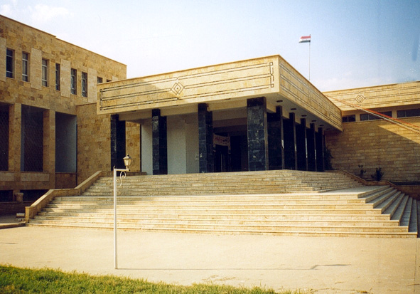

|
|
|
|
|
Musée de Deir ez-Zor Le musée de Deir ez-Zor, initialement fondé en 1974, a été reconstruit, agrandi et ré-inauguré en 1996 pour satisfaire les besoins
de conservation et d'exposition de collections sans cesse croissantes du fait de l’importante activité archéologique menée depuis 40 ans en Djéziré
syrienne. L’un des objectifs de ce musée est de promouvoir la recherche, l'éducation et le tourisme en Djéziré syrienne et de mieux faire
connaître l'histoire de cette région particulièrement riche en vestiges archéologiques. Les collections du musée de Deir ez-Zor, qui conserve actuellement plus de 25,000 objets, couvrent la longue histoire de la région, depuis la préhistoire (avec des sites comme Bouqras), la culture Chalcolithique et l’Âge d’Uruk (avec des sites comme Tell Bderi), ou les royaumes syriens de d'Âge du bronze (comme Mari), ainsi que la succession des cultures akkadienne, hellénistique, byzantine, parthe, sassanide, et islamique. C'est dans ce musée que sont notamment conservées, pour l'essentiel, les milliers de tablettes cunéiformes retrouvées à Mari depuis 1933. |
Arabic English Tablettes du Musée de Deir ez-Zor, par période: Late Uruk (ca. 3500-3000 BC) Early Dynastic (ca. 2800-2350 BC) Old Akkadian (ca. 2350-2200 BC) Ur III period (ca. 2100-2000 BC) Old Babylonian (ca. 2000-1600 BC) Middle Assyrian (ca. 1000-600 BC) Tablettes du Musée de Deir ez-Zor, par genre: Administrative texts Literary texts Letters Mathematical texts Royal/Monumental texts Tablettes du Musée de Deir ez-Zor, par site: Habuba-Kabira Djebel Aruda Tell Ashara / Terqa Tell Al-Hamidiye / Ta'idum Tell Bari / Kahat Tell Bderi Tell Beydar / Nabada Tell Brak / Nagar Tell Chagar Bazar / Ašnakkum Tell Cheikh Hamad / Dur Katlimmu Tell Hariri / Mari Tell Leilan / Šehna—Šubat-Enlil Tell Mozan / Urkeš Tell Masaikh Chercher toutes les inscriptions du CDLI |